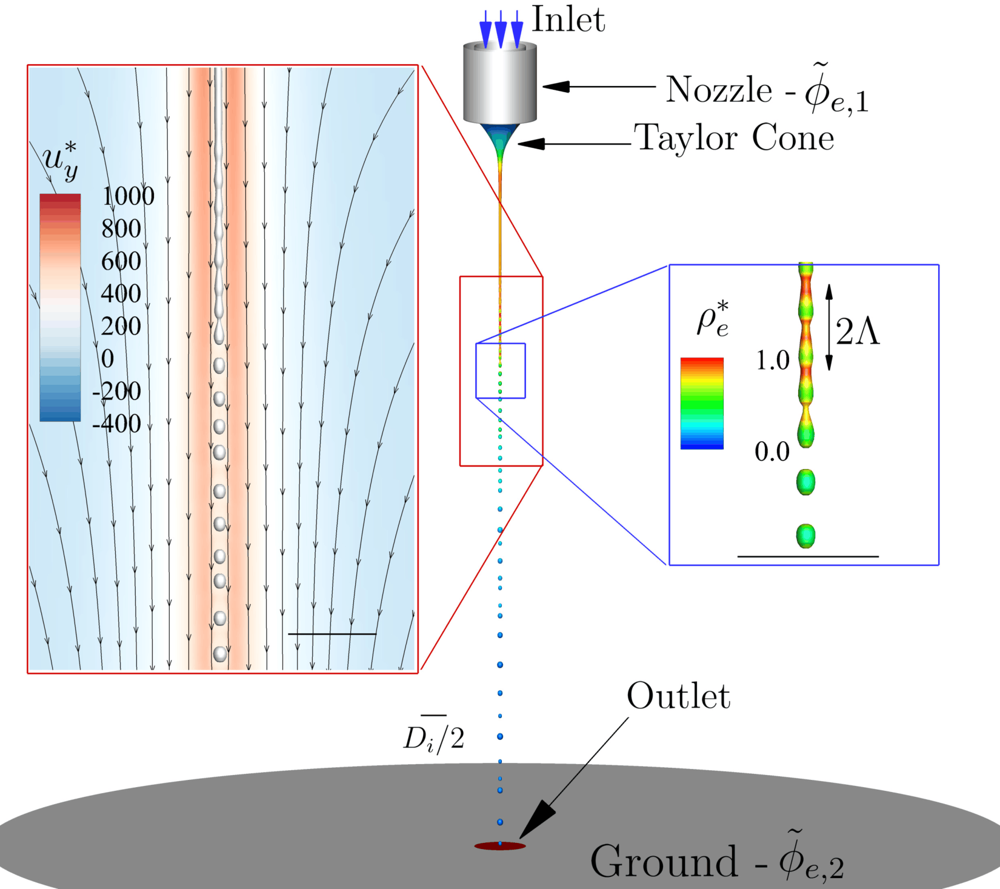
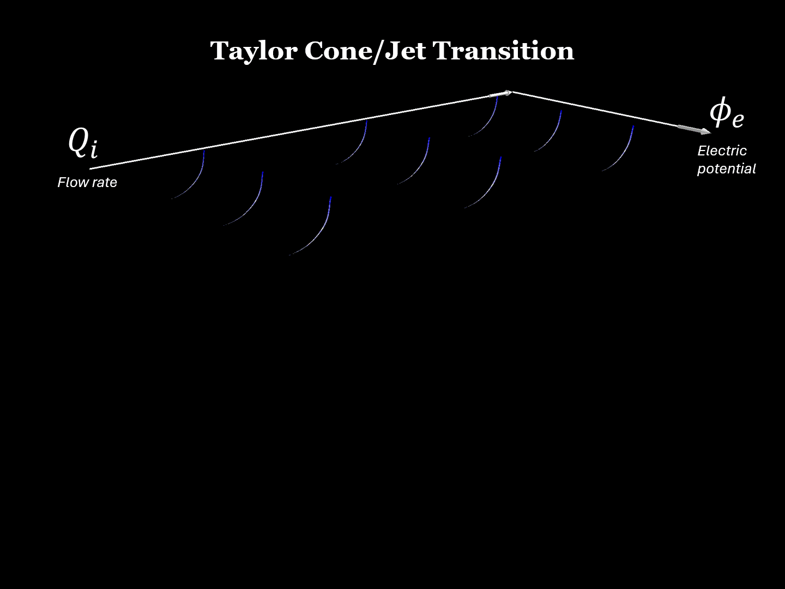

4.1. Axisymmetric Jets
This study considers a stable, axisymmetric Taylor cone-jet in which the liquid remains centred on the nozzle axis. Three-dimensional bending and whipping are therefore excluded, allowing the primary breakup of the continuous jet into charged droplets to be investigated.
The operating conditions reproduce experimental tests of a conductive heptane solution. The numerical model resolves the Taylor cone, the steady liquid jet, the growth of an axisymmetric capillary wave and the subsequent emission of droplets.
The axisymmetric assumption is appropriate within the stable emission window, where the dominant instability is a varicose disturbance: the jet diameter oscillates along its axis without lateral displacement of the centreline.
4.1.1. Taylor Cone-Jet and Primary Breakup
Liquid enters through a capillary maintained at an electric potential of 4 kV and is accelerated towards a grounded collector. The imposed electric stresses elongate the meniscus and form a thin jet whose diameter is much smaller than the capillary diameter.
Downstream of the steady jet, an axisymmetric wave develops. The alternating contraction and expansion of the interface produces nodes and antinodes, with a characteristic wavelength \(2\Lambda\). As the wave amplitude grows, the liquid necks and separates into droplets.
Electric charge is concentrated at the liquid-gas interface and reaches larger values near the wave antinodes. The transport of charge is therefore directly coupled to the dynamics of the breakup process.

4.1.2. EHD Flow Fields
The interactive visualisation presents the main scalar and vector fields at the first droplet emission. The operating conditions are an inlet flow rate of 5 nL/s and an applied potential of 4 kV.
The phase fraction identifies the liquid-gas interface, while the electric-charge density highlights charge accumulation along the cone and jet. Velocity and electric-field streamlines illustrate the coupling between the fluid motion and electrostatic forcing.
Field Visualisation
Select a scalar field and, optionally, the velocity or electric-field streamlines.
4.1.3. Breakup and Droplet Emission
After the initial transient, the jet reaches a periodic emission regime. Surface tension promotes necking of the thin jet, while electric stresses and charge transport modify the wavelength, frequency and diameter of the emitted droplets.
The breakup frequency increases as the inlet flow rate is reduced. Lower flow rates provide less liquid to stabilise the continuous jet, making the interface more sensitive to the electric forcing.
The numerical droplet diameters were compared with experimental measurements over several flow rates and electric potentials. The mean deviations were approximately 1%, demonstrating that the model captures the primary breakup and resulting droplet size accurately.

4.1.4. Characteristic Scales
The inlet flow rate and droplet diameter are expressed using the characteristic electrohydrodynamic scales:
Here, \(d_0\) is the characteristic droplet diameter, \(Q_0\) is the characteristic flow rate, \(\gamma\) is the surface-tension coefficient, \(\varepsilon_0\) is the vacuum permittivity, \(\rho\) is the liquid density and \(\sigma\) is its electrical conductivity.
These scales allow the numerical and experimental results to be compared using the normalised quantities \(d/d_0\) and \(Q_i/Q_0\).
Further Reading
The complete numerical formulation, validation, spectral analysis and modal decomposition of this axisymmetric cone-jet are presented in:
S. Cândido and J. C. Páscoa, “On modal decomposition as surrogate for charge-conservative EHD modelling of Taylor cone jets,” International Journal of Engineering Science, vol. 193, 103947, 2023. View publication .